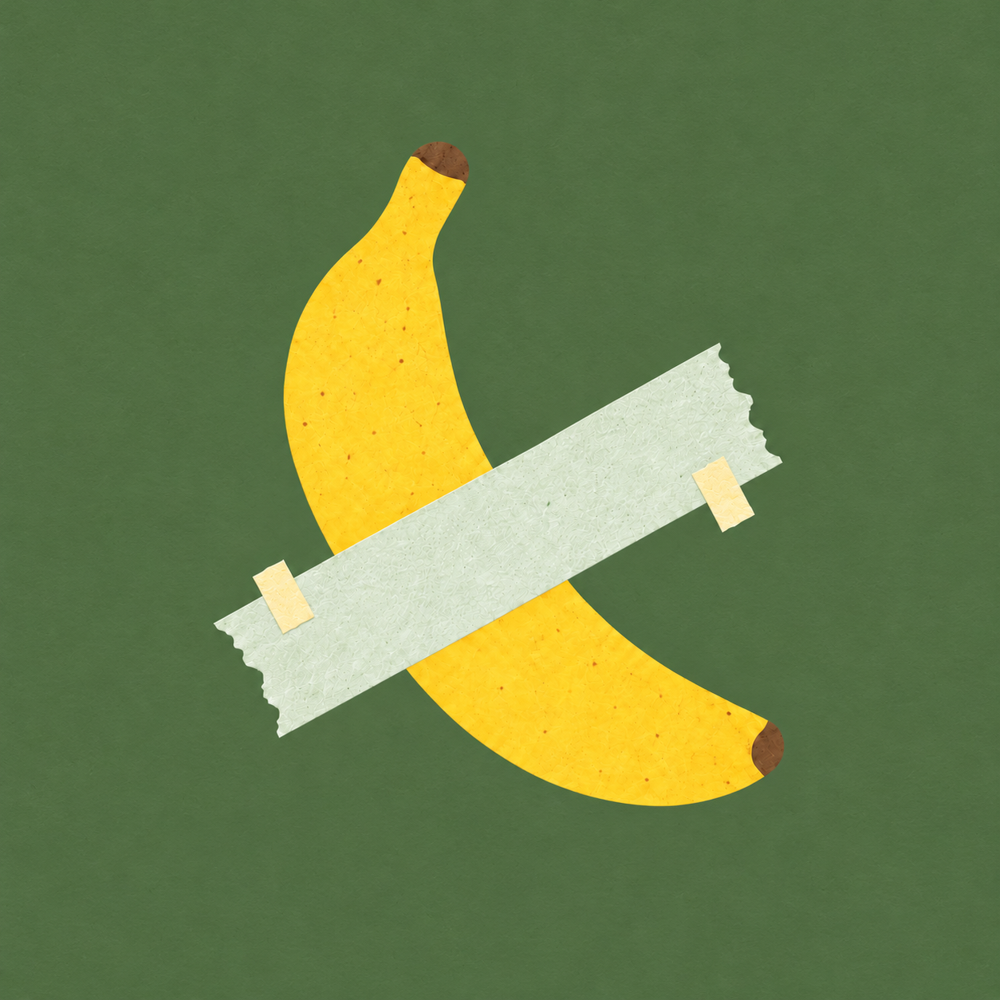

Kumo
保存位置
正在读取当前页面…
网页剪藏
本次将保存
正在计算内容清单…
选择标签
+ 新标签
视频参考
用途 · 可选
审美、画面或节奏
做事方法或操作步骤
观点、事实或论据
以后制作时复用
笔记
0
保存设置
返回
保存设置
快捷剪藏
正在读取…
修改快捷键
保存位置
连接的本地资料库
资料文件夹
浏览器下载目录
选择保存文件夹
使用已连接的资料库
选择用于保存收藏的资料文件夹，无需选择软件安装目录。
保存内容
保存当前视口截图
下载帖子中的主要图片
下载完整视频（可选，可能耗时较长）
讨论快照
不保存评论
已加载评论中优先保存高赞 5 条
已加载评论中优先保存高赞 10 条
保存与 AI 连接说明
嚼一嚼
准备保存
0 秒
准备保存
正文、媒体与原帖链接
首次保存时选一个资料文件夹，之后会记住。
我的收藏